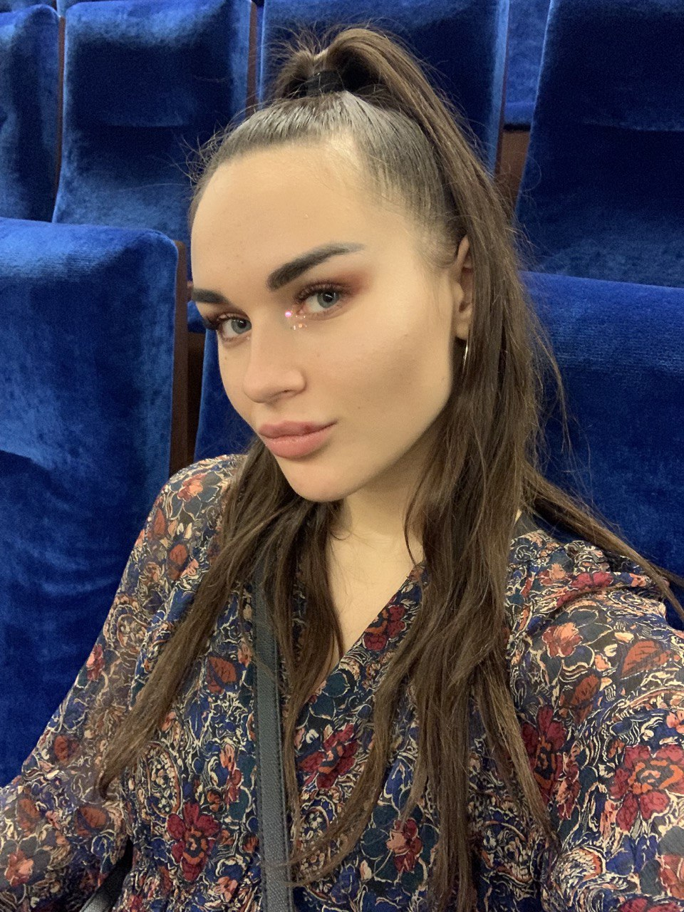

Ульяна Чернова

 Контактные данные
Контактные данные
Телефон: +7(925)029-80-68
E-mail: chernova-u@mail.ru
Вконтакте: Ульяна Чернова
 Обо мне
Обо мне
Исследователь планеты Земля
 Образование
Образование
МГТУ им. Н.Э. Баумана, специальность Инноватика
Опыт работы
Работаю менеджером по планированию рекламных размещений в цифровых СМИ в рекламном агентстве UM с 2019 года
 Хобби
Хобби
Танцую и не только в клубах, занимаюсь спортом. Мои любимые игры судоку и японские кроссворды. Обожаю отдых на природе и музыкальные фестивали
Как я стала разработчиком
- 3 мая обсудила с другом Fullstack-разработчиком возможности развития
- 12 мая начала самостоятельное изучение HTML и CSS по видео урокам
- 10 июня приступила к поиску курсов
- 20 июня стартовало мое обучение в Skillfactory☺